Videók
 Tényleg elpusztul a méh, ha megszúr?
Tényleg elpusztul a méh, ha megszúr? 3 dolog, amit nem tudtál a hangyákról
3 dolog, amit nem tudtál a hangyákról Tényleg a répa a nyulak kedvence?
Tényleg a répa a nyulak kedvence?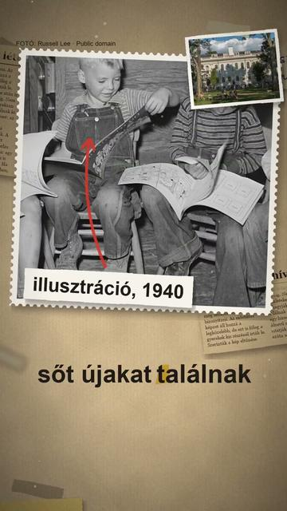
Tényleg létezik fotografikus memória?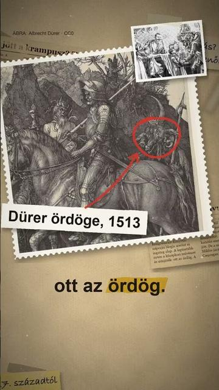
Honnan jött a krampusz? Tényleg pogány szörny?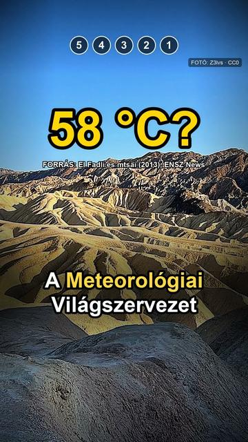
Az 5 legforróbb hely a Földön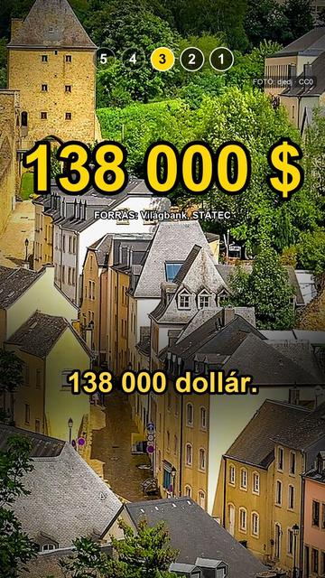
Az 5 leggazdagabb ország a világon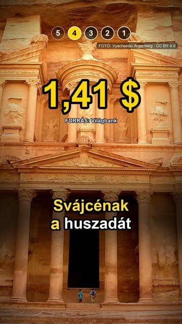
Az 5 legdrágább valuta a világon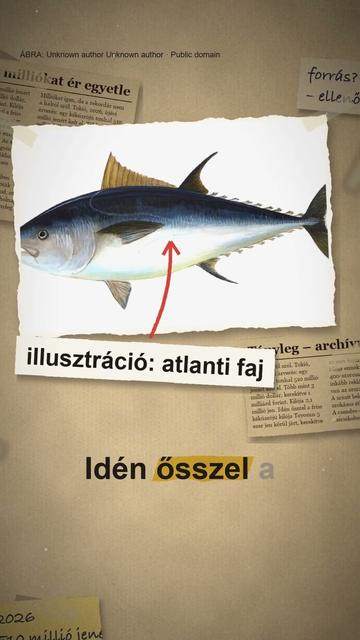
Tényleg milliókat ér egyetlen tonhal?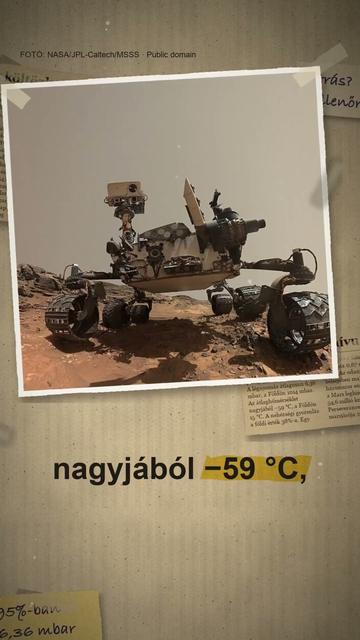
Tényleg költözhetünk a Marsra?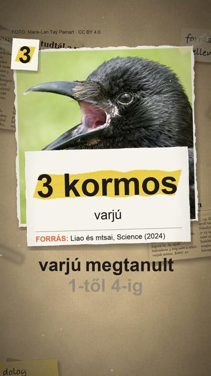
3 dolog, amit nem tudtál a varjakról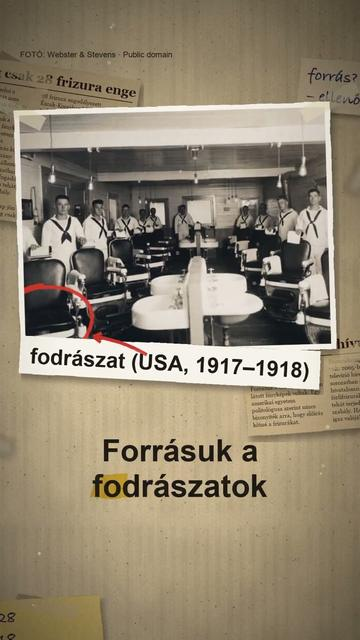
Tényleg csak 28 frizura engedélyezett Észak-Koreában?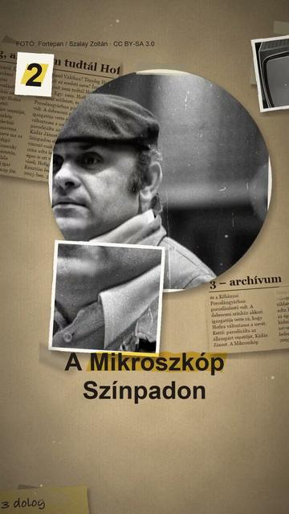
3 dolog, amit nem tudtál Hofi Gézáról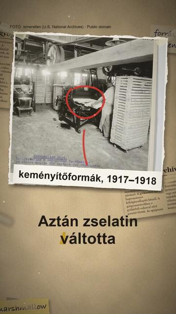
Tényleg gyógynövényből készült az első pillecukor?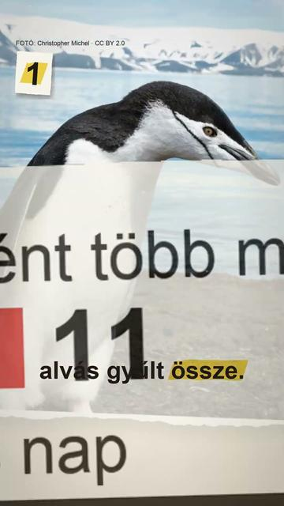
3 dolog, amit nem tudtál a pingvinekről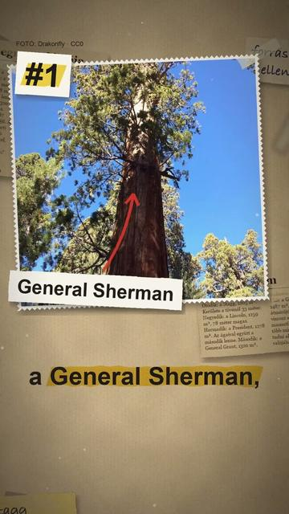
A világ 5 legnagyobb fája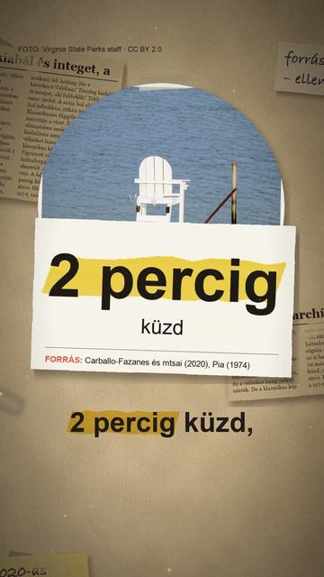
Tényleg kiabál és integet, aki fuldoklik?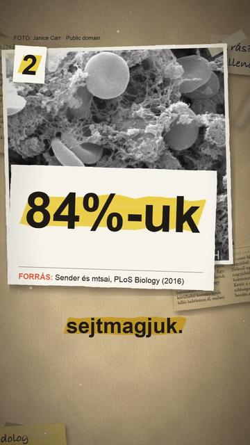
3 dolog, amit nem tudtál a saját testedről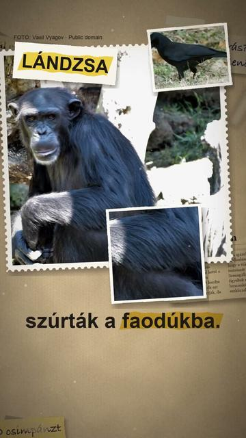
Ki használ eszközt, ki ismeri fel magát? 5 állat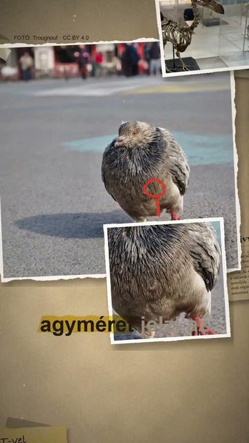
Tényleg buta madár volt a dodó? 3 dolog, amit nem tudtál a Jupiterről
3 dolog, amit nem tudtál a Jupiterről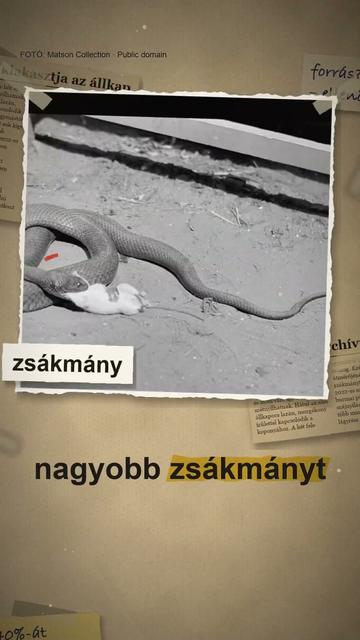
Tényleg kiakasztja az állkapcsát a kígyó?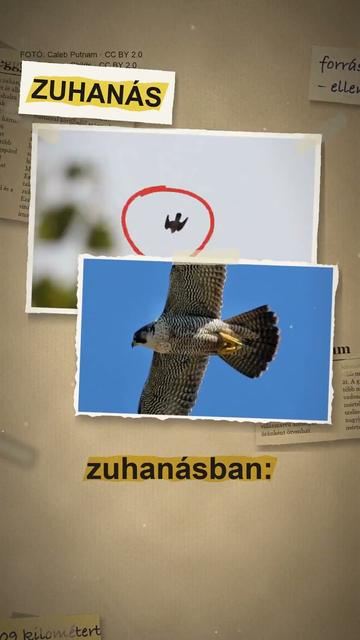
A világ leggyorsabb állata? 5 állat, 9 szám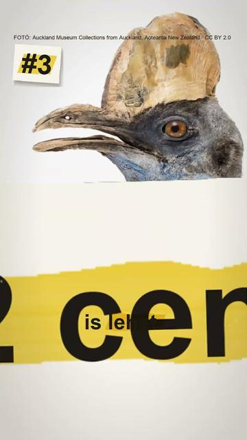
Az 5 legnagyobb madár a világon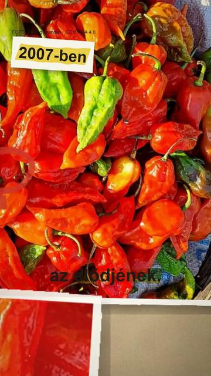
A világ legcsípősebb paprikája: 5 mért rekord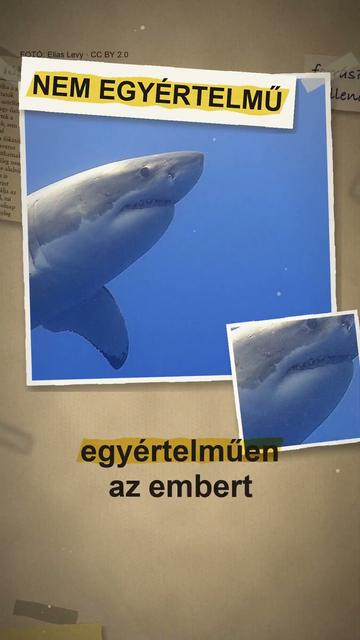
Tényleg fókának néz minket a fehér cápa?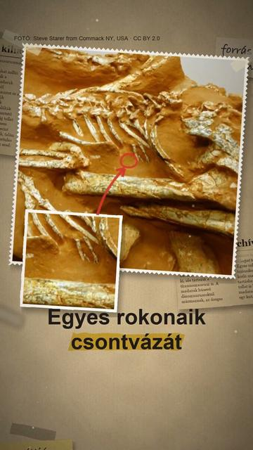
Tényleg kihaltak a dinoszauruszok? Tényleg Szigetvárnál temették el Szulejmán szívét?
Tényleg Szigetvárnál temették el Szulejmán szívét?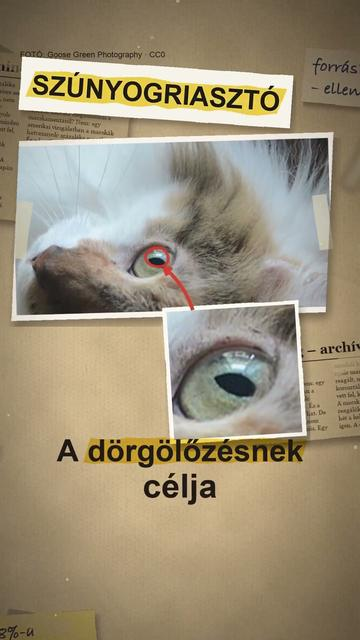
Tényleg minden macska megbolondul a macskamentától? 5 találmány, amely mögött magyar feltaláló áll
5 találmány, amely mögött magyar feltaláló áll Melyik a legnagyobb csillag? Nem tudjuk biztosan ⭐
Melyik a legnagyobb csillag? Nem tudjuk biztosan ⭐ 3 dolog, amit nem tudtál a krokodilokról
3 dolog, amit nem tudtál a krokodilokról A világ 5 leghosszabb folyója
A világ 5 leghosszabb folyója Valóban kiszárad a Balaton?
Valóban kiszárad a Balaton? Tényleg leves a gulyás?
Tényleg leves a gulyás? 3 dolog, amit nem tudtál Csernobilról
3 dolog, amit nem tudtál Csernobilról Valóban egy magyar orvos mentette meg a Titanic túlélőit?
Valóban egy magyar orvos mentette meg a Titanic túlélőit? 3 dolog, amit nem tudtál a Vénuszról
3 dolog, amit nem tudtál a Vénuszról Tényleg budapesti volt Houdini?
Tényleg budapesti volt Houdini?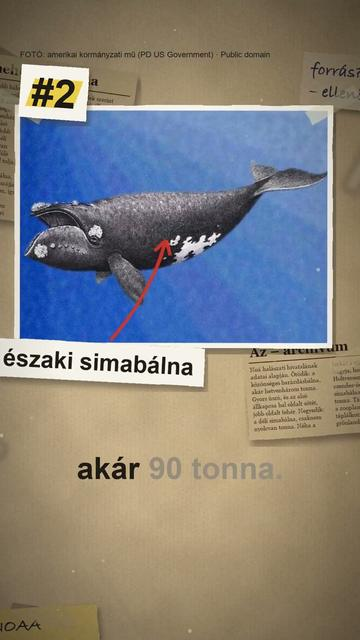
Az 5 legnehezebb bálna Ízületi gyulladást okoz az ujjropogtatás?
Ízületi gyulladást okoz az ujjropogtatás? 3 dolog, amit nem tudtál Karikó Katalinról
3 dolog, amit nem tudtál Karikó Katalinról Valóban? élő közvetítése
Valóban? élő közvetítése TévhitTényleg tele van vassal a spenót?
TévhitTényleg tele van vassal a spenót? TévhitTényleg csak 3 másodperces az aranyhal memóriája?
TévhitTényleg csak 3 másodperces az aranyhal memóriája? 3 dolog, amit nem tudtál a Tokaido-sinkanszenről
3 dolog, amit nem tudtál a Tokaido-sinkanszenről A világ 5 leghosszabb hala
A világ 5 leghosszabb hala IgazTényleg Kocs faluról kapta nevét a kocsi?
IgazTényleg Kocs faluról kapta nevét a kocsi? A világ 5 legnagyobb mamutfenyője
A világ 5 legnagyobb mamutfenyője Az 5 legnagyobb ország a világon
Az 5 legnagyobb ország a világon Az 5 legerősebb mérgű állat a világon
Az 5 legerősebb mérgű állat a világon A világ 5 legnagyobb kutyafajtája
A világ 5 legnagyobb kutyafajtája Mi hangzott el valójában az őszödi beszédben?
Mi hangzott el valójában az őszödi beszédben? Novák Katalin lemondása: mit mutatnak az iratok?
Novák Katalin lemondása: mit mutatnak az iratok? Valóban kihaltak a dinoszauruszok? És hány szíve van a polipnak?
Valóban kihaltak a dinoszauruszok? És hány szíve van a polipnak? Az 5 legnagyobb kígyó a világon
Az 5 legnagyobb kígyó a világon TévhitFeltekerve lopták el az Esterházy-madonnát?
TévhitFeltekerve lopták el az Esterházy-madonnát? 3 dolog, amit nem tudtál a Balatonról
3 dolog, amit nem tudtál a Balatonról 3 dolog, amit nem tudtál a Rubik-kockáról
3 dolog, amit nem tudtál a Rubik-kockáról Részben igazTényleg a magyar a világ egyik legnehezebb nyelve?
Részben igazTényleg a magyar a világ egyik legnehezebb nyelve? A világ 5 legnagyobb pókja
A világ 5 legnagyobb pókja Az 5 legkisebb ország a világon
Az 5 legkisebb ország a világon TévhitTényleg magyar növény a paprika?
TévhitTényleg magyar növény a paprika? Részben igazEgy magyar orvos látta el a Titanic túlélőit?
Részben igazEgy magyar orvos látta el a Titanic túlélőit? Részben igazBudapestnek köze van a Halloweenhez?
Részben igazBudapestnek köze van a Halloweenhez? Tévhit7 évig a gyomrunkban marad a lenyelt rágó?
Tévhit7 évig a gyomrunkban marad a lenyelt rágó? Részben igazTényleg a rejtőzködéshez vált színt a kaméleon?
Részben igazTényleg a rejtőzködéshez vált színt a kaméleon? TévhitCsak az agyunk 10 százalékát használjuk?
TévhitCsak az agyunk 10 százalékát használjuk? A Naprendszer 5 legnagyobb holdja
A Naprendszer 5 legnagyobb holdja TévhitLátszik a Kínai Nagy Fal az űrből?
TévhitLátszik a Kínai Nagy Fal az űrből? TévhitKiss Béla legendája: hány hordót találtak valójában Cinkotán?
TévhitKiss Béla legendája: hány hordót találtak valójában Cinkotán? 3 dolog, amit nem tudtál a polipokról
3 dolog, amit nem tudtál a polipokról Zöld bőrönd egy görög kolostorkertben: benne hat a hét ellopott festményből
Zöld bőrönd egy görög kolostorkertben: benne hat a hét ellopott festményből Kiss Béla, Cinkota 1916: a hordók, és a gyilkos, akit sosem kaptak el
Kiss Béla, Cinkota 1916: a hordók, és a gyilkos, akit sosem kaptak el Kiss Béla, Cinkota 1916: a hordók, és a gyilkos, akit sosem kaptak el
Kiss Béla, Cinkota 1916: a hordók, és a gyilkos, akit sosem kaptak el Hét festmény, egy éjszaka: ki rabolta ki a Szépművészetit 1983-ban?
Hét festmény, egy éjszaka: ki rabolta ki a Szépművészetit 1983-ban? Hét festmény, egy éjszaka: ki rabolta ki a Szépművészetit 1983-ban?
Hét festmény, egy éjszaka: ki rabolta ki a Szépművészetit 1983-ban? Miért őrizte Amerika 32 évig a magyar Szent Koronát?
Miért őrizte Amerika 32 évig a magyar Szent Koronát? Miért őrizte Amerika 32 évig a magyar Szent Koronát?
Miért őrizte Amerika 32 évig a magyar Szent Koronát? Magyarország, 1946: mennyit ért a fizetésed, mire hazaértél vele?
Magyarország, 1946: mennyit ért a fizetésed, mire hazaértél vele? VitatottMagyarország, 1946: mennyit ért a fizetésed, mire hazaértél vele?
VitatottMagyarország, 1946: mennyit ért a fizetésed, mire hazaértél vele? Mi folyik Budapest alatt? Egy barlang, amit ma is csak búvárok járnak
Mi folyik Budapest alatt? Egy barlang, amit ma is csak búvárok járnak Mi folyik Budapest alatt? Egy barlang, amit ma is csak búvárok járnak
Mi folyik Budapest alatt? Egy barlang, amit ma is csak búvárok járnak